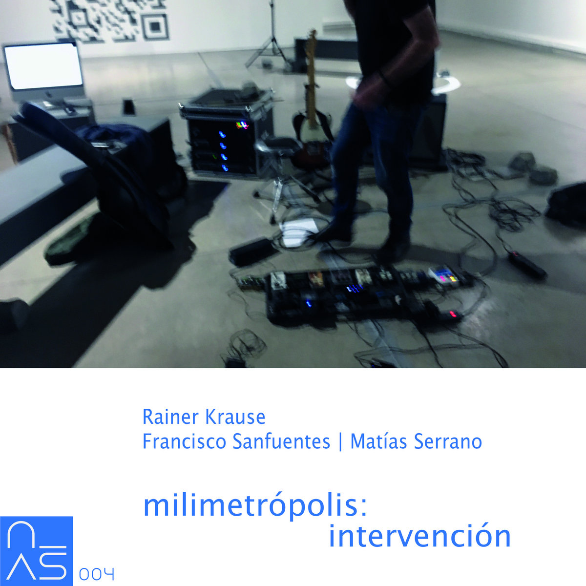

October, 2024

"milimetrópolis" is a 10-channel sound installation by artist Rainer Krause, which uses "millisounds" from the city of Santiago de Chile. Unlike what is commonly understood as a soundscape — a sonic event that characterizes a landscape through a composition of sounds extracted from it — in "milimetrópolis" the instance of syntactic decision over the order of the sounds is cancelled. A software was developed that randomly selects recordings from a sound pool containing several hundred of these millisounds and distributes them, also randomly, to 8 speakers located in the exhibition room.
On October 10, 2022, as part of Krause's exhibition "Rauschmittel" (Museo de Arte Contemporáneo, Parque Forestal, Santiago de Chile), the artist Francisco Sanfuentes performed a guitar and effects intervention in the installation. This intervention was recorded with virtual reality microphones and remixed into two binaural channels.
Especially for this release, Matías Serrano made a remix of a detail from "milimetrópolis": the recording of the sounds of a refrigerator in precarious operation.
Listen on Bandcamp